Peces de Fondo
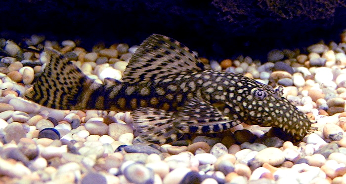
Ancistrus
Pez pacífico, apreciado por su gusto por las algas. Tamaño: 4cm a 10cm
Tipo: Pez de Fondo
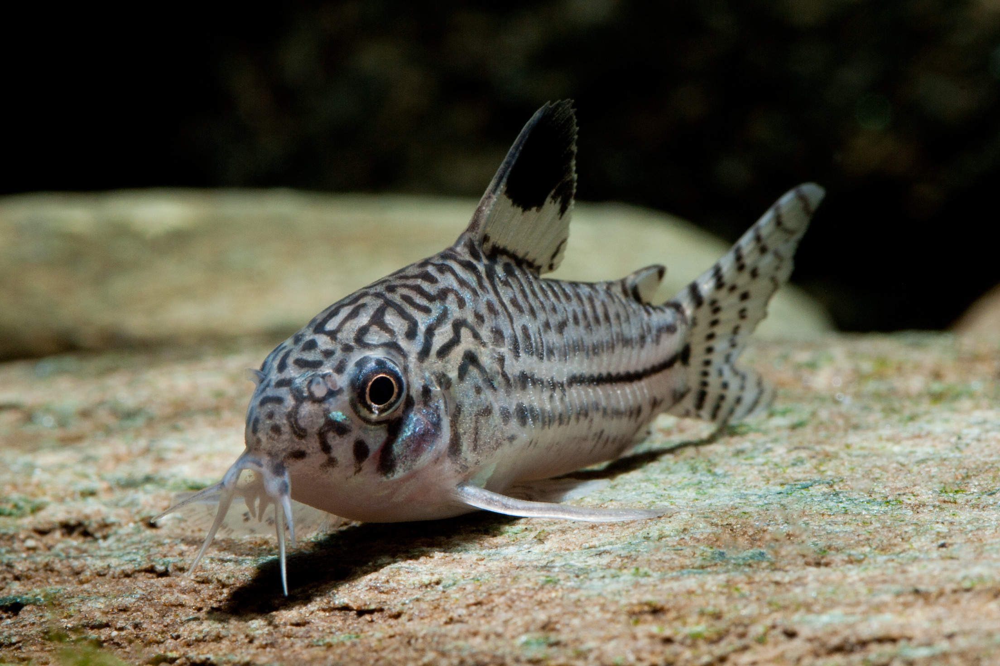
Corydoras
Poseen seis barbillones alrededor de la boca. Tamaño: 4cm a 6cm
Tipo: Pez de Fondo
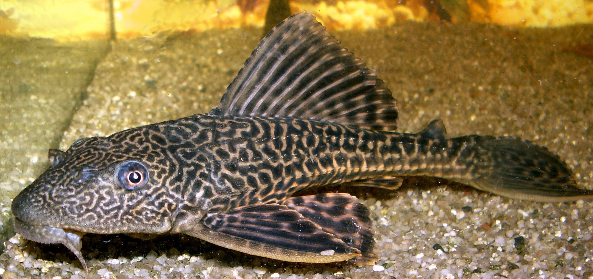
Plecos
Cuerpo aplanado, boca en forma de ventosa. Tamaño: 40cm a 60cm
Tipo: Pez de Fondo
Peces Pequeños
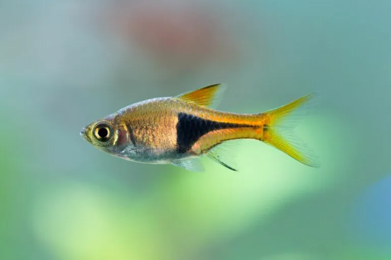
Arlequín
Conocido por sus colores y patrones. Tamaño: 3cm a 4cm
Tipo: Pez Pequeño
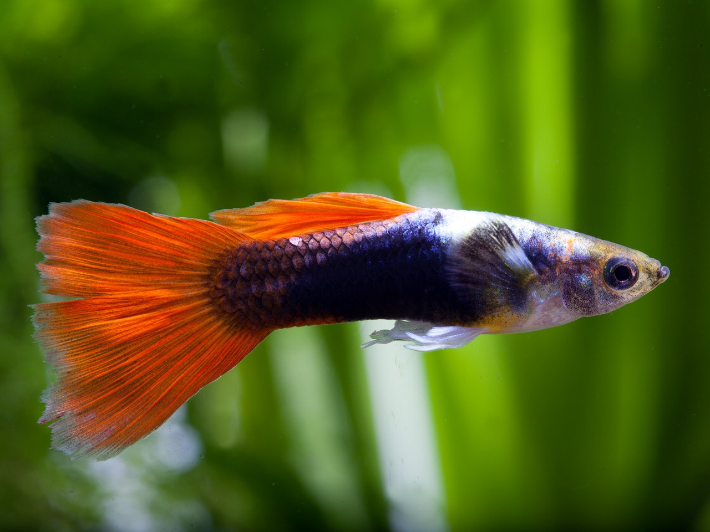
Guppy
Resistentes y muy llamativos. Tamaño: 3cm a 5cm
Tipo: Pez Pequeño

Molly
Sociables y activos, se adaptan bien a comunidades. Tamaño: 5cm a 12cm
Tipo: Pez Pequeño

Pez Mandarín
Es un pez marino muy colorido y llamativo, conocido por sus tonos azules, verdes y naranjas brillantes. Es pacífico y suele habitar en arrecifes coralinos. Tamaño: 6cm a 8cm
Tipo: Pez Pequeño
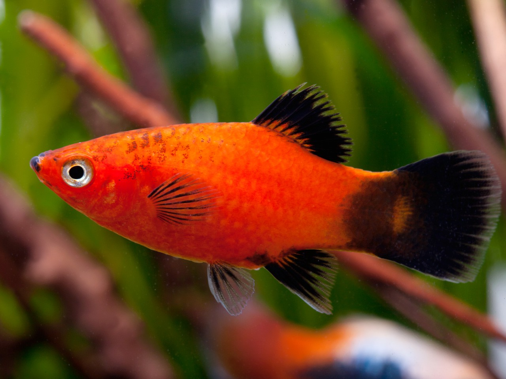
Platy
Vive en grupos y presenta variantes coloridas. Tamaño: 4cm a 7cm
Tipo: Pez Pequeño

Neón Chino
Cuerpo gris con franja roja brillante. Tamaño: 3cm a 4cm
Tipo: Pez Pequeño

Neón Tetra
Activo y pacífico, destaca por sus colores. Tamaño: 3cm a 4cm
Tipo: Pez Pequeño

Pez Cebra
Delgado y pequeño, con rayas como una cebra. Tamaño: 4cm a 5cm
Tipo: Pez Pequeño
Peces Medianos
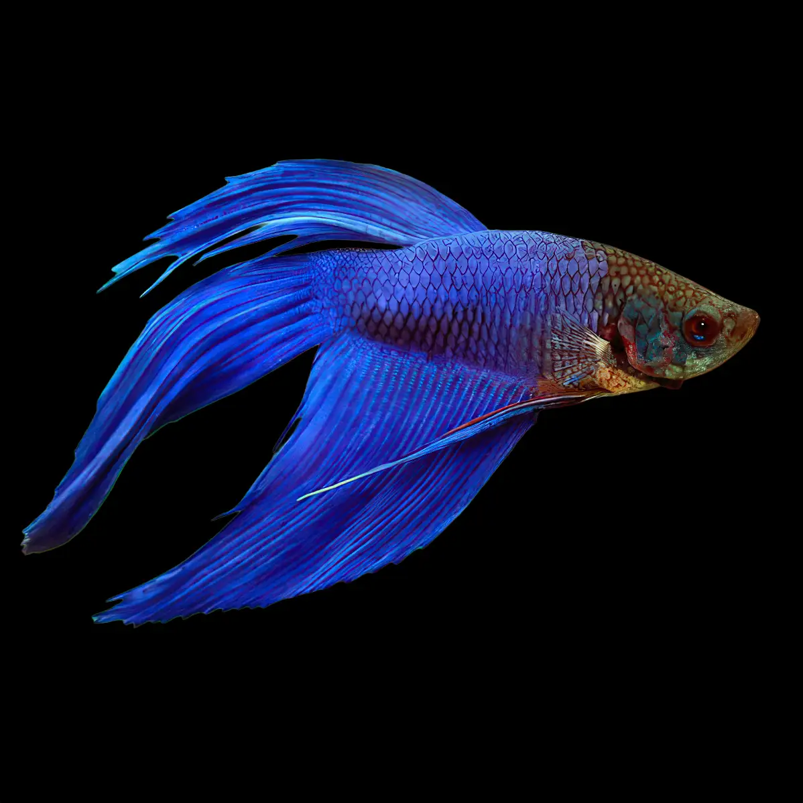
Betta
Territoriales, con colores y aletas llamativas. Tamaño: 4cm a 5cm
Tipo: Pez Mediano

Gurami Perla
Cuerpo plano y alargado, color hermoso. Tamaño: 12cm a 13cm
Tipo: Pez Mediano

Pez Ángel
Cuerpo plano y alargado, popular en acuarios. Tamaño: 15cm a 20cm
Tipo: Pez Mediano

Pez Disco
Sensibles y se estresan fácilmente. Tamaño: 15cm a 20cm
Tipo: Pez Mediano
Peces Grandes
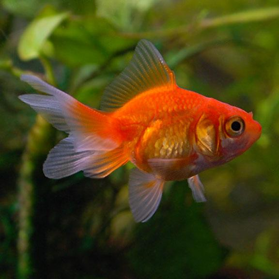
Goldfish
Colores anaranjados, versión doméstica de carpa china. Tamaño: 20cm a 36cm
Tipo: Pez Grande
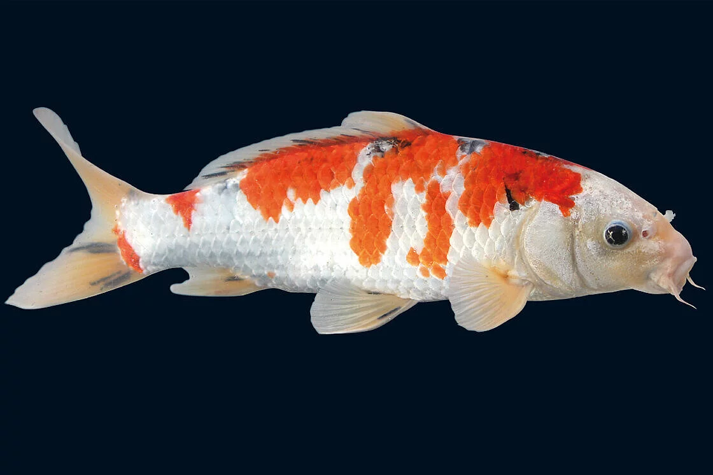
Koi
Carpas domésticas desarrolladas en Asia. Tamaño: 50cm a 120cm
Tipo: Pez Grande
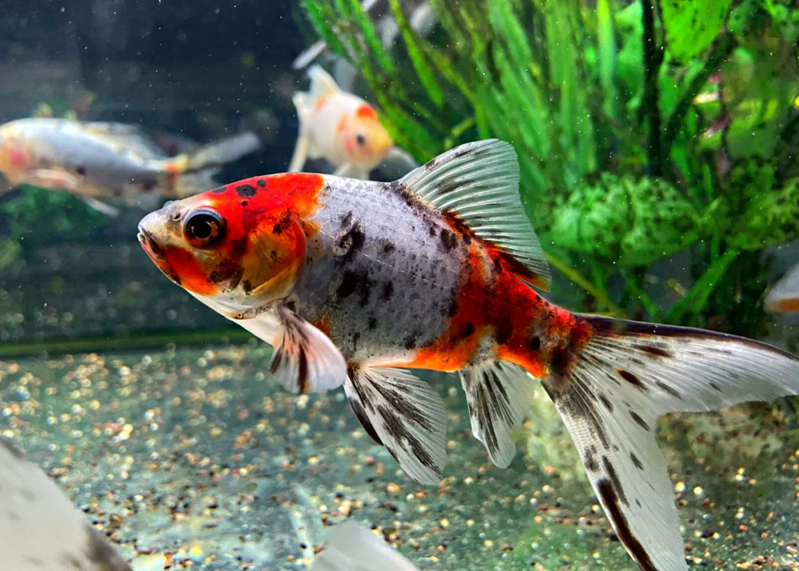
Shubunkin
Pez dorado resistente con patrón calico. Tamaño: 15cm a 50cm
Tipo: Pez Grande
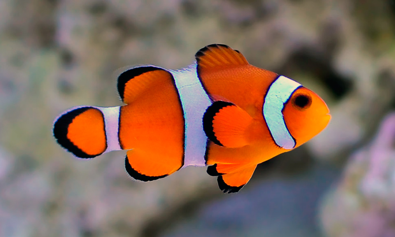
Pez Payaso
Se caracterizan por sus contrastados e intensos colores, y son populares por nemo. Tamano: 15cm a 17cm
Tipo> Pez Grande

Pez Cirujano Azul
Conocido como “Dory”, cuerpo azul brillante con aleta amarilla. Tamaño: 25cm a 31cm